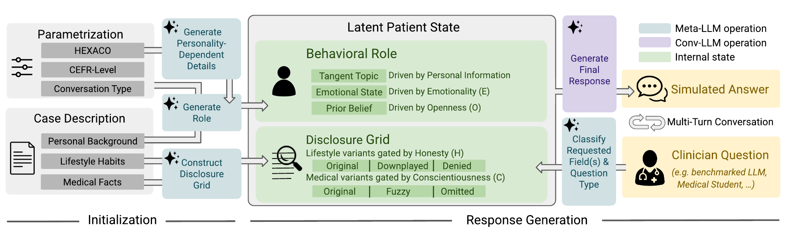
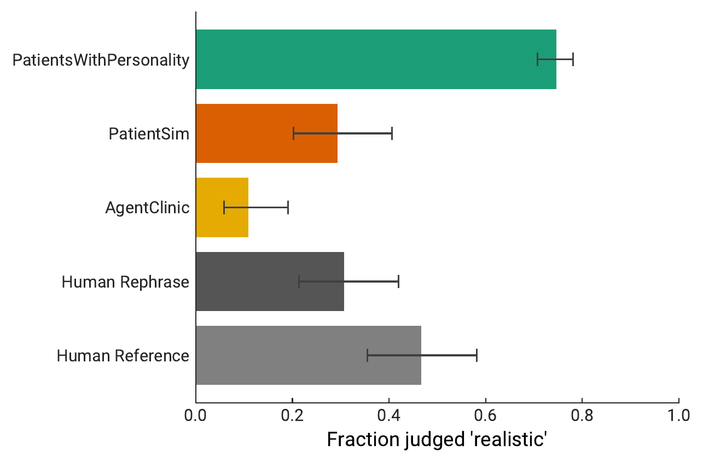
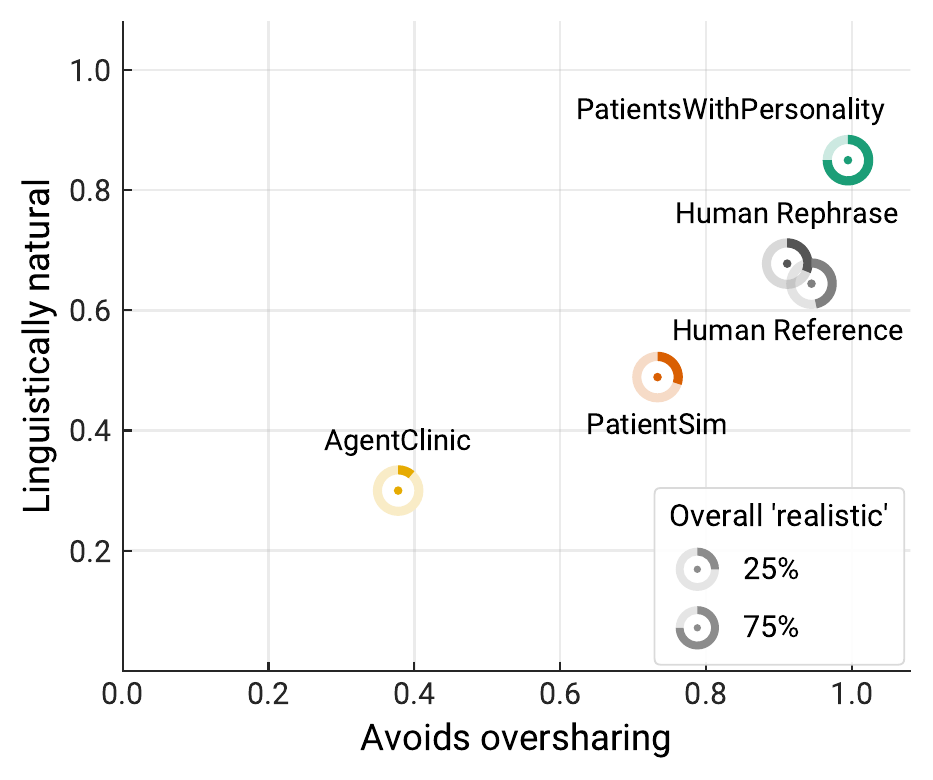
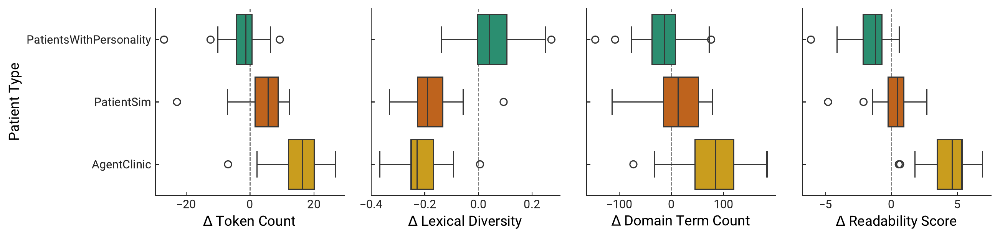
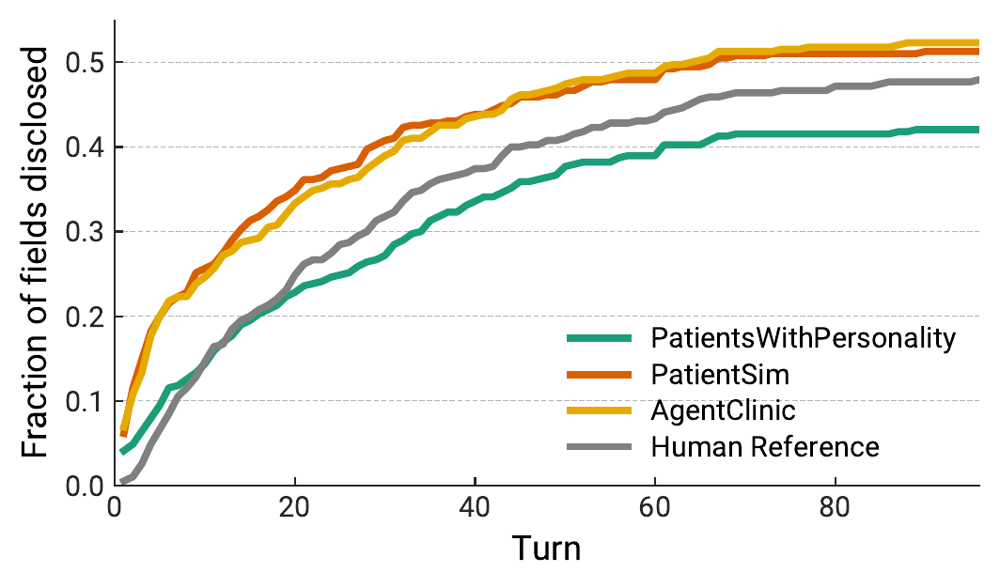
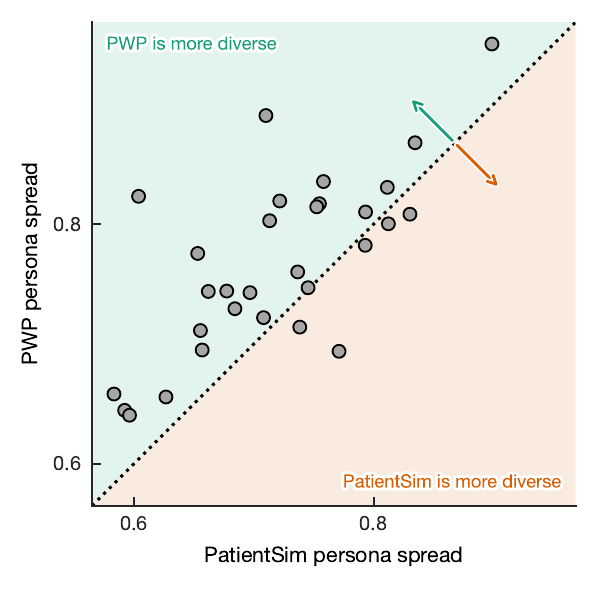
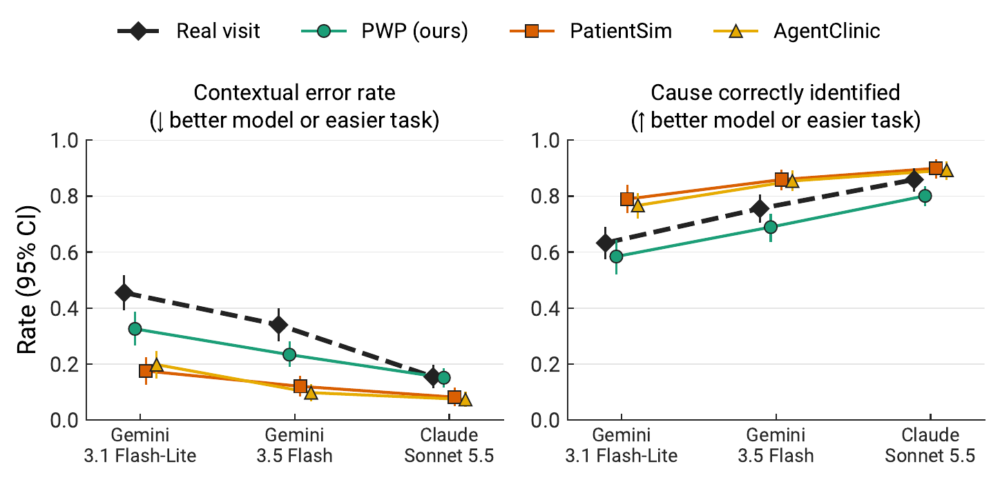

Realistic Patient Simulation through Controlled Diversity and Selective Disclosure
Machine Learning for Health (ML4H) 2026 · Proceedings Track
Testing clinical LLMs under realistic conditions usually means slow, expensive user studies. Patient simulators promise a scalable alternative, but existing ones overshare information and miss the variability of real patient behavior, so benchmarks built on them overestimate clinical capability.
PatientsWithPersonality (PWP) parametrizes each simulated patient over HEXACO, the six-dimensional model psychologists use to describe personality, on top of a latent patient state. A behavioral role controls how the patient talks; a query-conditioned disclosure grid controls what it can reveal at each turn.
We evaluate PWP in the first direct comparison of patient simulators under a shared protocol, anchored in transcripts of real physician–patient encounters. Clinicians judge PWP conversations realistic at least as often as the recorded encounters themselves and far more often than prior simulators, and almost never flag them as “too informative”. PWP reproduces the disclosure pacing of real patients, its configured traits are recoverable, and on a downstream contextual-care benchmark it stays closest to the difficulty of the real visit where prior simulators make the task too easy.
Six HEXACO axes plus language proficiency give fine-grained control over conversational style, cooperativeness, and disclosure.
Unrequested facts never enter the prompt; PWP tracks the disclosure pacing of real patients while baselines front-load the case.
In a blinded study on real VHA encounters, PWP is judged realistic in 75% of conversations, against 47% for the recorded encounters and 30% or less for prior simulators.
Clinicians and two independent LLM judges recover the configured traits, and PWP personas span a wider behavioral range than PatientSim on 25 of 30 cases.
On a contextual-care benchmark, PWP comes closest to the error rate of the real visit across three LLMs; prior simulators make the task too easy.
Configure a patient’s personality and take a history in the live demo; the simulator code is open source.
Each simulated patient is parametrized over the six axes of the HEXACO model of personality, a CEFR language level, and a conversation type (spoken or written). Honesty-Humility and Conscientiousness gate what the patient discloses; Emotionality, eXtraversion and Openness shape how it communicates; Agreeableness sets its attitude towards the clinician.
A case description of personal background, lifestyle habits, and medical facts is combined with the parametrization into a behavioral role (tangent topics, emotional state, prior belief), synthesized by a latent-role prompt tuned with evolutionary prompt optimization, and a disclosure grid that holds every lifestyle and medical fact in personality-dependent variants.
For each clinician turn, a meta-LLM classifies which case fields are requested and whether the turn is a yes/no question, an open question, or a statement. Only the requested fields enter the prompt, in the variant the latent state selects, and the conversational LLM generates the answer. Across the conversation, targeted follow-ups progressively unmask what the patient first recalled only vaguely.

All simulators replay the physician turns of 30 real primary-care encounters from the US Department of Veterans Affairs, so every simulated answer can be compared with what the real patient said. Nine resident clinicians rated 540 blinded conversations.


Clinicians judged PWP realistic in 75.0% of conversations, ahead of the recorded encounters (46.7%), their LLM rephrasing (31.1%), PatientSim (30.0%) and AgentClinic (11.1%). PWP was flagged as too informative once in 180 conversations, against 24/90 for PatientSim and 56/90 for AgentClinic. Transcribed in-person speech loses overlapping and cut-off turns, which some clinicians read as broken. Without the one rater who assumed written chats, agreement rises (Gwet’s AC1 0.28 → 0.38) and every comparison stays significant. Leaving out in addition the columns rejected as inconsistent with prior context raises the recorded encounters to 66.1%, but PWP rises as well (87.4%).


PWP stays closest to the recorded patients on answer length and lexical diversity and is the only simulator that does not over-produce clinical jargon. It follows the disclosure pacing of the real patients, while PatientSim and AgentClinic front-load the case. The same holds on ACI-Bench, a broader cohort across specialties (77% female, ages 22–100).
Each HEXACO axis set to its extreme is recovered from the conversation by clinicians and by an LLM judge, closer to the configured level than the matching PatientSim persona. An independent judge (Claude Sonnet 5.5) agrees with the primary one (Spearman 0.91). Holding the case fixed, the seven PWP personas land further apart than PatientSim’s on 25 of 30 cases, because the latent state is generated per encounter rather than taken from a fixed template.

Many clinical problems have a non-medical cause: a patient’s diabetes is uncontrolled because they dislike pricking their finger. A plan that ignores it is a contextual error, medically correct but failing for this patient. The VHA encounters come with expert annotations of these causes. For 92 cases (206 coded causes), a doctor LLM interviews the simulated patient and states the cause and a plan for each problem. As reference, the same LLM reasons over the transcript of the real visit.

PatientSim and AgentClinic volunteer the cause, so every model makes significantly fewer contextual errors than on the real visit and the differences between models shrink towards the ceiling. PWP comes closest to the real visit, matching its error rate for Claude Sonnet 5.5, and keeps the gap between models intact. For both Gemini doctors PWP is still easier than the real visit (0.33 vs 0.45 and 0.23 vs 0.34). Making the persona withholding (H = C = 3) or emotional with a strong prior belief (E = O = 3) raises the difficulty further, through different mechanisms.
Pick a case, set the six HEXACO sliders, and take a history from a PWP patient. The demo runs Gemini 3.1 Flash-Lite and scales to zero when idle, so the first visit may take a few seconds to wake up.
Conversations are limited per session and day and are logged for research. The cases are de-identified vignettes; the simulator is a research prototype and gives no medical advice. Open in a new tab
PWP turns patient simulation into a controllable component of clinical LLM benchmarks: its default configuration matches the difficulty of real patients, and its personality axes make the same case harder in targeted ways, surfacing failure modes that uniformly cooperative simulators hide.
Next, we are matching the simulated population to the distribution of real patient personalities, moving beyond an ordinal mapping of the HEXACO axes, and extending the simulation beyond text towards the full patient encounter.
@inproceedings{schlager2026patients,
title = {Patients With Personality: Realistic Patient Simulation
through Controlled Diversity and Selective Disclosure},
author = {Schlager, Moritz and Jungmann, Friederike and Schmidgall, Samuel
and Raffler, Philipp and Hartl, Franziska and Wende, Eva
and Ro{\ss}m{\"u}ller, Paula and Ketzer, Conrad and Thompson, Matthew
and Chen, Justin Anthony and Chen, Christina and Hassidim, Avinatan
and Webster, Dale R. and Matias, Yossi and Liu, Yun
and Rueckert, Daniel and Schaekermann, Mike and Hager, Paul},
booktitle = {Machine Learning for Health (ML4H)},
year = {2026}
}